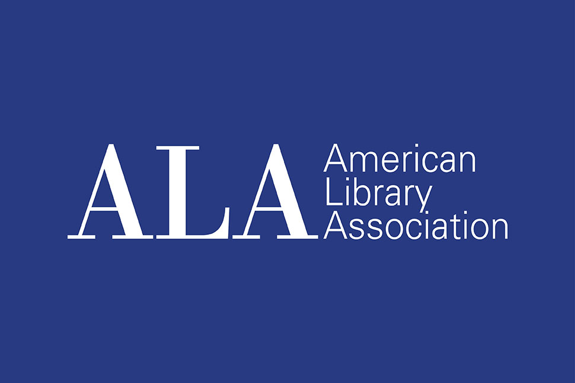

Section
Lib Guides
While the resources we’ve shared and described above give a range of guidance and support for prospective students and library professionals who are interested in the emerging tech world of IS professions, below you’ll find even more resources compiled by library professionals all over the country. A large part of the job for emerging technologies librarians now and in the near future is and will be writing policies for the use of, interaction with, and education of artificial intelligence systems and technologies. Edwin Rodarte at LAPL is, now in early 2026, writing his library’s AI guidelines and policies, sourcing his knowledge and guidance from other institutions as well as policies already in place at LAPL. As information professionals, we rely on the web of knowledge we share across institutions!
Here are a few Lib Guides library professionals have compiled for information professionals seeking to better understand and guide users on artificial intelligence as well as how to write general library best practice policies.
Selected Lib Guides & Policy Toolkits
New York State Library. “Handbook for Library Trustees of New York State (2023 Edition): Policies.” https://nyslibrary.libguides.com/Handbook-Library-Trustees/policies .
American Library Association. “Library Policy Development Resource Guide.” https://libguides.ala.org/librarypolicy .

University of Illinois Library. “Generative AI.” https://guides.library.illinois.edu/generativeAI .
University of Oklahoma Libraries. “Artificial Intelligence in Libraries: Ethics, Literacy, and Applications.” https://guides.ou.edu/libai .
A robust research guide on the ethics, literacy, and application of Artificial Intelligence in the library space.